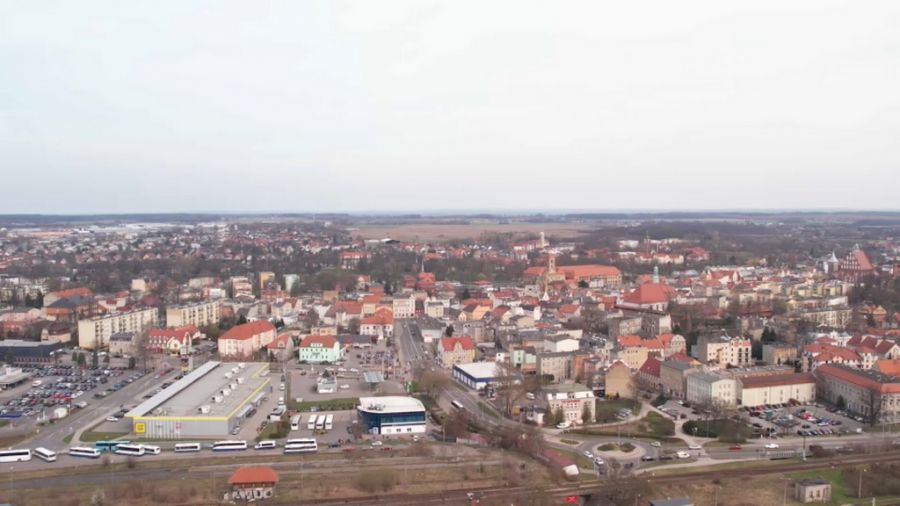

Walory turystyczne Żar!

Trochę o Żarach
Żary to miasto, będące jednocześnie gminą miejską oraz siedzibą gmini wiejskiej Żary zlokalizowane w zachodniej Polsce, w województwie lubuskim.
Żary zostały założone w 1030 roku a prawa miejskie uzyskały w 1260 roku.
Żary są położone na wysokości 160m n.p.m.
Właścicielami Żar byli: Deminowie, Packowie, Bibersteinowie oraz Promnitzowie.
